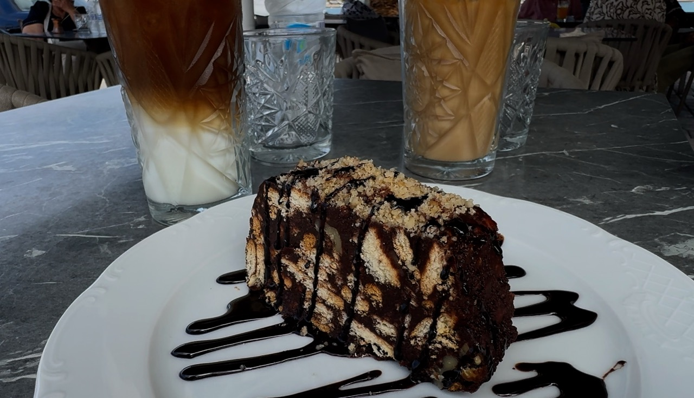
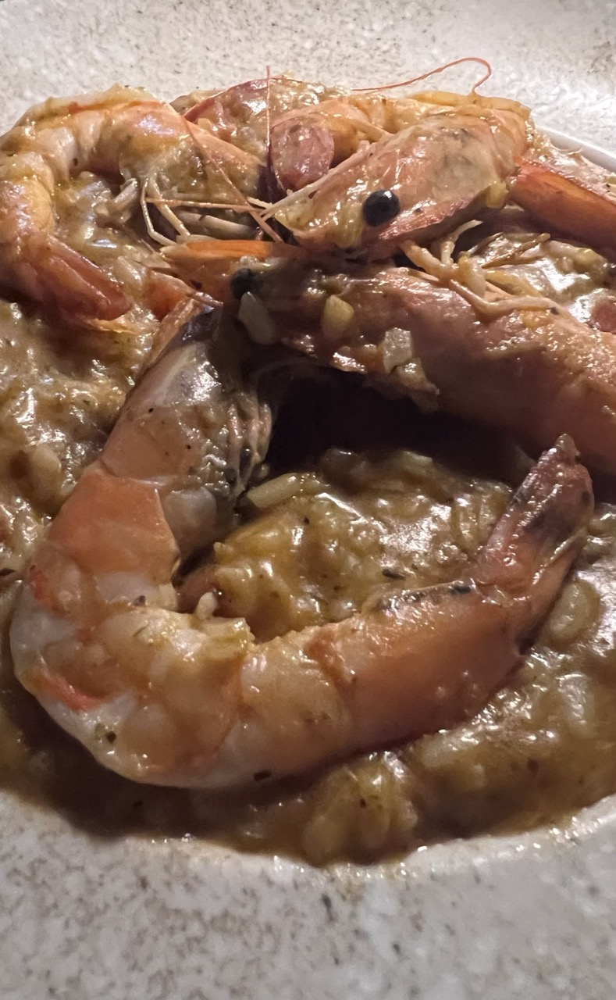
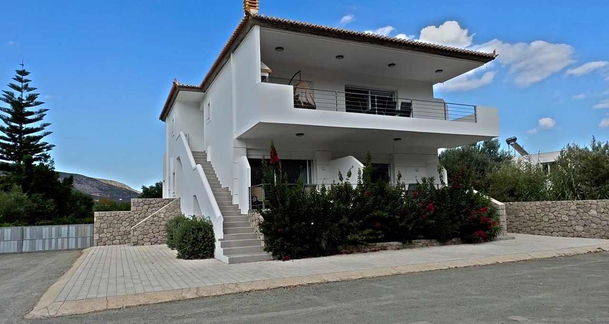

Our first impressions of this relaxed corner of the Peloponnese — and why it turned out to be such a good base for exploring the surrounding coast and islands.
Have we found the perfect place to stay in the Peloponnese?
Sometimes you arrive somewhere in Greece and know almost immediately that you like it. Ermioni was one of those places.
We were looking for somewhere to stay while exploring this corner of the Peloponnese, with easy access to the islands and coastal towns we wanted to visit. But would Ermioni turn out to be somewhere we genuinely enjoyed, or simply a convenient place to park ourselves for a few days?
As it turned out, it was rather good at being both.
With an attractive harbour, waterfront cafés, traditional tavernas, stylish bars and a wonderfully relaxed atmosphere, Ermioni made a very promising first impression. There was plenty to explore, lots of places to eat and drink, and even a woodland walk overlooking the sea.
Best of all, it still felt like a real Greek town rather than somewhere that existed purely for holidaymakers. We had a feeling we might have chosen rather well.
A TOWN WITH TWO WATERFRONTS
Situated at the southern end of the Argolic Peninsula, Ermioni is surrounded by the sea on three sides, giving it a lovely coastal setting. What makes it particularly interesting is that the town has two waterfronts, each with its own character.
We decided to explore both before settling into our accommodation. After all, first impressions matter, particularly when you've chosen somewhere as your base for the next few days.
The northern waterfront had a traditional, working-harbour feel. Fishing boats sat alongside sailing boats and yachts, creating a pleasing mixture of everyday Greek life and visitors passing through. There was something appealing about seeing a harbour that still felt connected to the town's history of fishing and shipbuilding.
Looking across the water, we could see the island of Hydra, which was particularly exciting because we were planning to visit it during our stay.
Ermioni might not be the flashiest destination in the Peloponnese, but it certainly knows how to put on a waterfront.
The southern side had a rather different atmosphere. Here, cafés, restaurants, fish tavernas and bars lined the water's edge, offering plenty of opportunities to sit down, enjoy the views and watch the boats bobbing about in the harbour.
There was a more sophisticated feel to some of the waterfront establishments, with smart outdoor seating and lovely views across the water. Elsewhere, the atmosphere was more traditional and relaxed, with locals enjoying their coffee and catching up with friends.
We liked the contrast between the two sides. You could wander between them, find somewhere that suited your mood and settle down for a while without feeling that you needed a packed itinerary to enjoy yourself.
Although Ermioni attracts visitors, it hasn't lost that sense of being a place where people live, work and go about their everyday business.
There was even an unexpected road hazard to look out for: a tree growing in the middle of the road. Quite who decided that was a sensible arrangement remains a mystery. It might add character to the town, but I'd be rather wary of encountering it on a dark night!
COFFEE, CAKE AND THE SIMPLE PLEASURES

One of the things we quickly discovered about Ermioni was how easily we slipped into a routine.
Every morning, we'd head out for a walk around town. Then, having completed our healthy exercise, we would reward ourselves with an iced coffee. Cake frequently followed.
It was a system that worked rather well, although I'm not entirely convinced the cake was essential to our fitness regime.
Greek coffee culture is one of the things we love about travelling in Greece. Cafés aren't simply places to grab a quick drink before rushing off somewhere else. They're meeting places where people sit, chat and take their time.
We sampled several cafés in Ermioni and discovered that iced latte with sugar was becoming our new favourite. In the Greek sunshine, a cold coffee is wonderfully refreshing, particularly when there's a harbour view thrown in for good measure.
We also spotted some tempting-looking cake shops, which clearly deserved further investigation. Sadly, there are only so many hours in a day, even when you're on holiday.
But Ermioni isn't just about sitting beside the water with a coffee. One of our favourite discoveries was the woodland peninsula walk, which gave us a completely different perspective on the town.
The path winds through pine trees, passing rocky coves and offering lovely views across the sparkling sea. With the trees on one side and the water on the other, it was peaceful, scenic and a welcome change from wandering between cafés and restaurants.
Allow around 30 minutes for the walk, depending on how far you go and how often you stop to admire the views. We found it a lovely way to stretch our legs, enjoy the natural surroundings and appreciate another side of Ermioni.
Of course, walking along the coast in Greece does have one disadvantage. It gives you plenty of time to think about your next iced coffee and cake.
DINNER BY THE WATER AT SPIRANDREAS

After all that walking, our thoughts naturally turned towards food. Specifically, seafood.
Fortunately, Ermioni wasn't short of places to eat, and we found ourselves at Spirandreas Fish Tavern, right beside the water.
We were lucky enough to get a table overlooking the harbour. As evening approached, a little table lamp provided a soft glow, the boats moved gently on the water and the setting became wonderfully atmospheric.
It was exactly the sort of evening we enjoy when travelling around Greece: good food, a beautiful location and absolutely no reason to hurry.
Max chose the Spirandreas risotto, a combination of chicken and prawns, while I went for the seafood risotto. Both dishes were delicious, full of flavour and beautifully home-cooked.
The staff were friendly and attentive without hovering, which made the whole experience even better.
Spirandreas was one of those restaurants where everything came together: the food, the service and the setting. We thoroughly enjoyed our meal and would happily recommend it to anyone visiting Ermioni.
Not every waterfront experience was quite such a triumph, though.
On another occasion, we ordered sangria at one of the smarter bars overlooking the harbour. What arrived was a rather uninspiring glass of sangria without any fruit. The bigger surprise came when we saw the price.
Let's just say that a lovely waterfront view doesn't automatically guarantee good value for money.
IS ERMIONI A GOOD BASE FOR EXPLORING THE PELOPONNESE?
This was the question we really wanted to answer during our stay.
We weren't just looking for somewhere pretty to spend a few days. We wanted a convenient base from which to explore more of this part of Greece, without spending half our holiday driving backwards and forwards.
Ermioni began to make a very convincing case for itself.
The town offered everything we needed for a comfortable stay: supermarkets for everyday essentials, plenty of cafés and restaurants, attractive waterfronts and somewhere pleasant to go for a walk each morning.
There was also plenty of free parking, which was a welcome bonus when exploring by car. Anyone who has spent time driving around Greek towns will understand why finding somewhere straightforward to leave the car can make a real difference.
Our accommodation was on the outskirts of town, around a five-minute drive from the harbour. It was modern, bright and well equipped, with a proper kitchen and everything we needed for self-catering.

This might sound like a small detail, but we've stayed in places where the kitchen equipment suggested that cooking consisted of opening a packet and hoping for the best.
Here, we had the essentials, plenty of space and even a fridge stocked with bottled water. In the Greek heat, that was a particularly welcome touch.
Being slightly outside the centre worked well for us. We could drive into town when we wanted to explore, shop or eat out, while having a comfortable base to return to.
And then there were the islands.
Ermioni is well placed for planning excursions to Hydra, Spetses and Poros, while Porto Heli and other coastal destinations are also within reach by car. We were particularly looking forward to visiting Hydra, which we'd already spotted across the water from the harbour.
These trips were a big part of the reason we'd chosen the area, and Ermioni was proving to be a useful starting point for our plans.
At the time of our visit, there were also exciting proposals for a major marina development on the northern waterfront. The plans described in our video included a €20 million investment, with berths for boats, low-rise buildings and a boutique hotel.
It would be interesting to see how such a development might change the town. Investment could bring new life and facilities, but we hope Ermioni retains the relaxed character that makes it appealing in the first place.
For us, the attraction wasn't luxury marinas or a packed programme of activities. It was the combination of a pleasant town, easy access to the surrounding area and the chance to enjoy Greece at a slower pace.
PRACTICAL TIPS FOR VISITING ERMIONI
- Getting around: Ermioni is easy to explore on foot once you've parked. Having a car is useful if you want to explore the surrounding coast and visit nearby destinations.
- Parking: We found plenty of free parking, making Ermioni a convenient stop on a Peloponnese road trip.
- Where to eat: We particularly enjoyed Spirandreas Fish Tavern, with its waterfront setting, friendly service and delicious risottos.
- Coffee and cake: Make time for a leisurely café stop. An iced latte with sugar became our favourite, and there are tempting-looking cake shops to investigate.
- Walking: The woodland peninsula walk is well worth doing. Allow around 30 minutes, or longer if you want to take your time enjoying the scenery.
- Accommodation: Staying just outside the centre worked well for us, with our accommodation around five minutes by car from the harbour. A well-equipped kitchen and space to relax made it a good base.
- Island trips: Ermioni is a useful starting point for exploring Hydra, Spetses and Poros. Check ferry and excursion arrangements for your travel dates before planning your itinerary.
- Eating and drinking: Waterfront restaurants and bars make the most of the setting, but check prices before ordering, especially at the more sophisticated establishments.
OUR VERDICT: IS ERMIONI WORTH VISITING?
We took to Ermioni almost immediately, and the more time we spent there, the more we appreciated our choice.
It has an attractive harbour, a good selection of places to eat and drink, a lovely coastal walk and a relaxed atmosphere that makes it easy to settle into holiday mode.
We particularly enjoyed our morning walks, our iced coffee and cake stops, and that lovely evening meal at Spirandreas. The two waterfronts give the town variety, while the woodland peninsula offers a peaceful escape from the cafés and restaurants.
But perhaps the biggest advantage is its location. If you're exploring this corner of the Peloponnese and want somewhere comfortable to return to after a day out, Ermioni makes a very good case for itself.
It's not a destination that demands you rush around ticking off attractions. Its appeal lies in the harbour, the everyday Greek atmosphere, the food and the simple pleasure of spending time beside the sea.
Would we return? Absolutely.
We arrived wondering whether we'd found the perfect place to stay or merely somewhere convenient. By the time we left, we felt we'd found a little of both.
Ermioni is a harbour town with plenty of charm, and one we really liked.
Places we've stayed. Places we've loved. Places worth seeing.